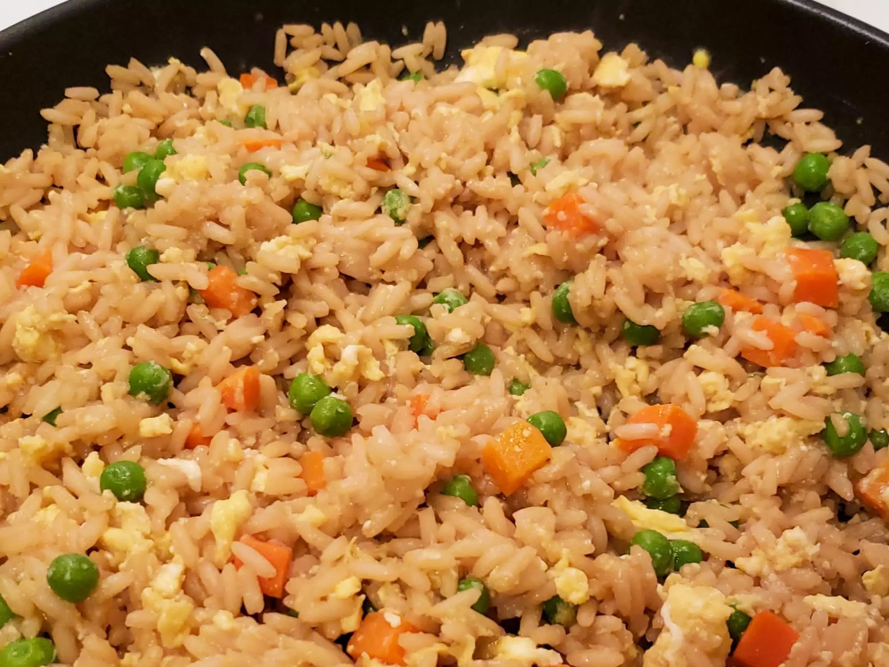

Egg Fried Rice

Description
A quick and easy recipe for egg fried rice. No garlic or spring onions .-.
- Prep: 5 mins
- Cook: 15 mins
- Total: 20 mins
- Servings: 4
Ingredients
- 1 cup water
- 1/2 teaspoon salt
- 2 tablespoon soy sauce
- 1 cup uncooked instant rice (what)
- 1 teaspoon vegetable oil
- 1/2 onion, finely chopped
- 1/2 cup green beans
- 1 egg, lighty beaten
- 1/4 teaspoon ground black pepper
Steps
-
In saucepan bring water, salt, and soy sauce to a boil. Add rice and
stir. Remove from heat, cover and let stand 5 minutes.
-
Heat oil in a medium skillet or wok over medium heat. Saute onions and
green beans for 2 to 3 minutes. Pour in egg and fry for 2 minutes,
scrambling egg while it cooks.
- Stir in the cooked rice, mix well and sprinkle with pepper.